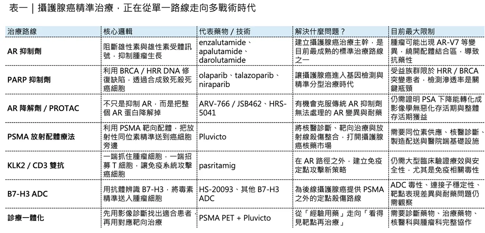
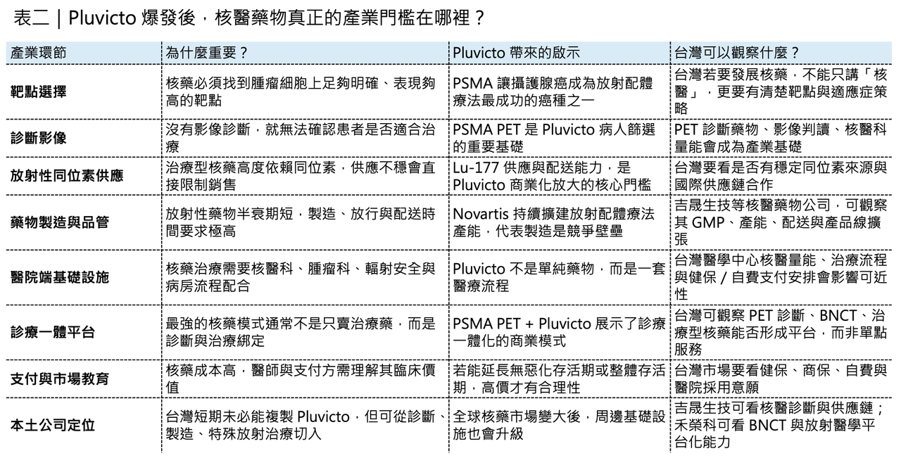

單季 6.42 億美元：Pluvicto 把攝護腺癌精準治療推進新階段
攝護腺癌治療正在進入一個新的精準治療時代。
這一次，主角不是傳統荷爾蒙治療，也不是一般化療，而是 Pluvicto（lutetium Lu 177 vipivotide tetraxetan）。這款由 Novartis 推出的放射配體療法，2026 年第一季銷售額達 6.42 億美元，以固定匯率計算年增 70%。Novartis 在財報中指出，Pluvicto 的成長主要來自美國「化療前」轉移性去勢抗性攝護腺癌族群需求增加，以及美國以外市場可近性擴大。
這個數字不只是單季銷售好看，更重要的是，它代表攝護腺癌治療的邏輯正在改變。過去半個多世紀，攝護腺癌治療主軸幾乎都圍繞一件事：如何切斷雄性素訊號。但當腫瘤逐漸學會逃避雄性素受體藥物，產業就必須尋找新的戰術。
現在，Pluvicto 的爆發，正好說明攝護腺癌已經從「荷爾蒙訊號攻防戰」，走向 基因分型、蛋白降解、新靶點定點殺傷、核醫診療一體化 的多路線競爭。這也是為什麼 Pluvicto 的成長，不只是 Novartis 一家公司的勝利，而是整個攝護腺癌精準治療進入新階段的訊號。

01｜攝護腺癌治療的第一條主線：從去勢治療到 AR 抑制劑
攝護腺癌藥物開發的起點，可以追溯到 1941 年。
當時芝加哥大學醫師 Charles Huggins 發現，晚期攝護腺癌患者接受睪丸切除或雌激素治療後，血清酸性磷酸酶下降，骨轉移症狀改善。這項研究確認了攝護腺癌高度依賴雄性素訊號，也讓 Huggins 在 1966 年獲得諾貝爾生理學或醫學獎。
這個發現定義了往後幾十年攝護腺癌治療的核心邏輯：只要切斷雄性素訊號，就能抑制腫瘤。
而雄性素訊號最重要的節點，就是 androgen receptor（AR，雄性素受體）。AR 上有一個關鍵區域，叫做 ligand-binding domain（配體結合區）。簡單說，就是雄性素與受體結合的位置。過去大多數攝護腺癌藥物，就是想辦法讓藥物去占住這個位置，阻止雄性素啟動腫瘤增生訊號。
📌第一代代表藥物是 bicalutamide。
它能競爭性占據 AR 的配體結合區，但親和力有限，當腫瘤細胞出現 AR 擴增或訊號增強時，效果會逐漸下降。
📌第二代 AR 抑制劑則把這條路線推到高峰。
最具代表性的藥物是 enzalutamide。它不只阻斷雄性素與 AR 結合，也能干擾 AR 進入細胞核，以及 AR 和 DNA 結合後啟動下游基因轉錄。這讓 enzalutamide 成為攝護腺癌治療裡最重要的重磅藥物之一。
📌後續 apalutamide 與 darolutamide 也陸續上市。Apalutamide 擴大了非轉移性去勢抗性攝護腺癌與轉移性荷爾蒙敏感性攝護腺癌的治療選擇。Darolutamide 則因血腦屏障穿透較低，在部分高齡患者與神經系統副作用風險上形成差異化。這一代藥物共同建立了攝護腺癌的標準治療骨架，但問題也很清楚，只要所有藥物都圍繞 AR 配體結合區設計，癌細胞只要把這個區域繞開，整條治療路線就會遇到天花板。

02｜AR-V7 暴露了舊戰術的極限
攝護腺癌最麻煩的地方，是它會進化。
在治療壓力下，腫瘤細胞可能出現 AR-V7 這類剪接變異型。AR-V7 最重要的特徵，是它保留了可以啟動癌細胞增生的核心功能，但失去了配體結合區。
這代表什麼？代表傳統 AR 抑制劑找不到可以結合的位置。如果把完整 AR 想像成一把需要鑰匙啟動的機器，傳統藥物就是卡住鑰匙孔，讓雄性素打不開機器。但 AR-V7 像是把鑰匙孔整個拔掉，卻讓機器自己持續運轉。這就是配體結合區策略的根本限制。當腫瘤走到轉移性去勢抗性攝護腺癌，也就是 metastatic castration-resistant prostate cancer（mCRPC） 階段，單純繼續加強 AR 抑制，已經不一定夠。於是產業開始從三條路突圍：
📌 第一條，是尋找腫瘤的第二個弱點，例如 DNA 修復缺陷。
📌 第二條，是不再只抑制 AR，而是直接把 AR 蛋白降解掉。
📌 第三條，是跳出 AR 軸，尋找新的定點殺傷座標，例如 PSMA、KLK2、B7-H3。
這三條路，就是目前攝護腺癌精準治療最重要的產業主線。
03｜第一條路：PARP 抑制劑，從基因缺陷切入
📌第一條路，是 PARP inhibitor（PARP 抑制劑）。
這類藥物的核心概念叫做 synthetic lethality（合成致死）。有些攝護腺癌患者帶有 DNA 修復相關基因突變，例如 BRCA1、BRCA2 或其他同源重組修復基因缺陷。這些腫瘤細胞本來就比較難修補 DNA 損傷。如果再用 PARP 抑制劑阻斷另一條 DNA 修復路徑，癌細胞就可能因累積過多 DNA 損傷而死亡。
代表藥物包括 olaparib、rucaparib、niraparib、talazoparib。
📌Olaparib 是第一個在攝護腺癌獲准的重要 PARP 抑制劑之一。Talazoparib 則和 enzalutamide 聯合，用於 HRR 突變的 mCRPC。這條路線的優勢，是科學邏輯清楚，也符合精準醫療趨勢。
但它也有明顯限制。受益人群不是所有攝護腺癌患者，而是帶有 HRR 或 BRCA 相關突變的患者。
這意味著基因檢測滲透率非常重要。如果患者沒有做基因檢測，藥物就很難找到適合族群。所以 PARP 抑制劑的真正瓶頸，不只是藥物本身，而是診斷、檢測、醫師教育和支付系統能不能跟上。這也讓攝護腺癌治療開始從「所有人用類似藥物」走向「依照分子特徵選藥」。
04｜第二條路：AR 降解劑，從抑制走向清除
📌第二條路，是 AR degrader（雄性素受體降解劑）。
這裡最受關注的是 PROTAC 技術。PROTAC 可以理解成一種「分子膠水」或「分子牽線工具」。它一端抓住目標蛋白，另一端抓住細胞內的蛋白質清除系統，最後讓細胞把目標蛋白當成垃圾處理掉。傳統 AR 抑制劑是讓 AR 不要工作。AR 降解劑則是把 AR 整個清除。
這對 AR-V7 或其他 AR 耐藥機制很有吸引力，因為只要能降解整個 AR 蛋白，就有機會繞過配體結合區消失的問題。全球最受關注的資產之一，是 Arvinas 開發的 ARV-766，後來 Novartis 取得全球開發與商業化權利，交易包括 1.5 億美元首付款，以及最高約 10.1 億美元里程碑付款。ARV-766 的早期臨床資料顯示，在帶有 AR 配體結合區突變的 mCRPC 患者中，部分患者 PSA 下降超過 50%。
這組資料還不能直接等同於最終成功，因為攝護腺癌真正重要的仍是影像學無惡化存活期、整體存活期，以及長期安全性。但它代表一個非常重要的方向：攝護腺癌治療正在從「阻斷訊號」走向「清除致病蛋白」。這個方向若成功，會對蛋白降解藥物整個賽道有很強的示範意義。
05｜第三條路：跳出 AR，找到新的定點殺傷座標
📌第三條路，是尋找 AR 之外的新靶點。
這裡最重要的幾個名字，包括 PSMA、KLK2、B7-H3。PSMA 是攝護腺特異性膜抗原，在許多攝護腺癌細胞上高度表現，因此非常適合作為診斷與治療靶點。
📌Pluvicto 就是這條路線的代表。
它把能辨識 PSMA 的配體，和放射性同位素 lutetium-177 結合。藥物進入體內後，會尋找表現 PSMA 的癌細胞，把放射線帶到腫瘤附近，進行局部殺傷。這就是所謂 radioligand therapy（放射配體療法）。
如果用白話講，它不是把全身都照射，而是把「小型放射武器」精準送到癌細胞旁邊。這也是 Pluvicto 為什麼能快速成長的原因。它不是傳統藥物，也不是傳統放療，而是核醫、影像診斷、靶向藥物和精準治療的結合。
Novartis 的 Pluvicto 已在 PSMA 陽性 mCRPC 中建立治療地位，並且正往更早期病人推進。Novartis 2025 年公布，Pluvicto 在 PSMA 陽性轉移性荷爾蒙敏感性攝護腺癌的 PSMAddition Phase 3 試驗中，達成影像學無惡化存活期主要終點，並呈現整體存活期正向趨勢。
這代表 Pluvicto 的價值不只在後線治療，如果它能逐步往前線推進，市場天花板會顯著打開。
除了 PSMA，KLK2 也值得注意。Johnson & Johnson 的 pasritamig 是 KLK2/CD3 雙特異性 T 細胞接合藥物。它一端結合攝護腺癌細胞上的 KLK2，另一端結合 T 細胞上的 CD3，把 T 細胞拉到癌細胞旁邊進行攻擊。ASCO GU 2026 相關資料顯示，pasritamig 聯合 docetaxel 在經治 mCRPC 中出現具討論價值的 PSA50 反應率。
📌B7-H3 則是 ADC 方向的重要靶點。
Hansoh Pharma 的 HS-20093 是 B7-H3 ADC，已獲中國 NMPA 納入突破性治療藥物程序，用於既往接受新型內分泌治療與 taxane 化療後的晚期去勢抗性攝護腺癌。ADC 的邏輯，是用抗體把化療毒素精準帶到癌細胞。若 B7-H3 靶點與毒素設計成立，這類藥物有機會成為 PSMA 之外另一條定點殺傷路線。所以，攝護腺癌治療正在形成一個新的三角：
📌 PARP 抑制劑針對 DNA 修復缺陷。
📌 AR 降解劑正面處理 AR 耐藥。
📌 PSMA、KLK2、B7-H3 則負責開發新的定點殺傷座標。
這就是攝護腺癌精準治療真正成熟的標誌。
06｜Pluvicto 為什麼能成為「核藥王者」？關鍵不只在藥效，也在供應鏈
Pluvicto 的成功，不能只用「臨床資料漂亮」解釋，它背後其實是一個非常重的產業系統。
放射配體療法和一般小分子藥不同，它需要放射性同位素。
📌需要精準製造。
📌需要放射性藥物配送能力。
📌需要核醫科與腫瘤科合作。
📌需要病人先做 PSMA 影像檢查，確認腫瘤是否表現 PSMA。
📌需要醫院有處理放射性藥物的能力。
📌需要治療流程符合輻射安全規範。
也就是說，Pluvicto 不是單純賣一支藥，它賣的是一套診療一體化系統。
Novartis 也非常清楚這件事，所以持續擴張放射配體療法製造能力。Novartis 於 2026 年宣布在美國德州興建放射配體療法製造設施，作為其擴大美國製造與研發投資的一部分；該公司也已在美國多地布局相關產能，以支援 Pluvicto 與 Lutathera 等產品需求。
這正是核藥產業的高門檻，不是每家公司有一個靶點，就能做出 Pluvicto。你還需要同位素供應、藥物合成、品質控制、冷鏈與時效配送、醫院網絡、核醫基礎設施，以及醫師教育。所以 Pluvicto 的高成長，代表的不只是 PSMA 靶點成功。它代表核醫藥物正式從小眾專科治療，走向大型商業化平台。
07｜全球產業格局：Novartis 領跑，但競爭才剛開始
Novartis 是目前核藥與放射配體療法最具代表性的玩家。
Pluvicto 與 Lutathera 讓 Novartis 在這個領域建立先發優勢，但大型藥廠已經不會讓它獨享市場。Eli Lilly 透過收購 POINT Biopharma 切入放射藥物。Bristol Myers Squibb、AstraZeneca、Bayer、Telix、Lantheus 等公司，也都在不同放射性藥物、診斷試劑、治療同位素與靶點方向上布局。這個市場的核心競爭會有三層。
📌 第一層，是靶點競爭。
PSMA 是攝護腺癌最成熟的核藥靶點，但未來還會有 DLL3、FAP、SSTR、HER2、GRPR、B7-H3 等更多腫瘤靶點進入放射藥物開發。
📌 第二層，是同位素競爭。
Lutetium-177 是目前最重要的治療用同位素之一，但 actinium-225 等 alpha-emitting radionuclide 也受到高度關注。Alpha 粒子的殺傷距離更短、能量更高，理論上可能帶來更強腫瘤殺傷，但也對安全性與供應鏈提出更高要求。
📌 第三層，是診療一體化競爭。
未來核藥不會只賣治療藥。它會綁定診斷影像、病人篩選、治療決策、療效監測與後續治療安排。
也就是所謂 theranostics（診療一體化），誰能同時掌握診斷與治療，誰就能在這個市場裡建立更強黏性。
08｜這和台灣有什麼關係？核醫藥不是空中樓閣，而是正在進入本地臨床
這一波核藥浪潮，台灣不是完全旁觀者。Pluvicto 已經在台灣取得藥證並進入臨床使用。台灣核醫專家文章指出，Pluvicto 在台灣核准適應症為 PSMA 陽性轉移性去勢抗性攝護腺癌，且曾接受 AR pathway 抑制療法與 taxane-based chemotherapy 的成人患者。
這代表台灣患者已經可以接觸到全球最重要的 PSMA 放射配體療法。但從產業角度看，台灣更值得觀察的是核醫藥物基礎設施。
例如 吉晟生技 是台灣第一家進入資本市場的核子醫學藥廠，主力在 PET 診斷藥物，並規劃投資建置新一代核醫藥廠，擴大核醫藥物產能與供應能力。禾榮科 則是從 BNCT，也就是硼中子捕獲治療切入，推動含硼藥物與治療設備的診療整合。BNCT 和 Pluvicto 不是同一種療法，但共同指向一個方向：放射醫學與精準治療正在成為台灣生醫產業可以布局的新領域。
台灣目前還很難說已經有自己的 Pluvicto，但台灣可以從三個位置切入。
📌 第一，是核醫診斷藥物。沒有診斷，就沒有放射配體治療的病人篩選。
📌 第二，是核醫藥物製造與配送。放射性藥物有半衰期限制，製造與物流非常重要。
📌 第三，是特殊放射治療與診療一體平台。BNCT、PET 診斷、治療性核藥，都需要醫院、藥廠、設備、法規與核醫專業一起整合。

結語｜Pluvicto 的爆發，代表攝護腺癌進入多戰術時代
Pluvicto 單季 6.42 億美元銷售額，表面上是一個商業成績。
但更深層的意義是，它證明了攝護腺癌治療已經不再只靠雄性素訊號這一條路。從 Huggins 發現雄性素依賴，到 bicalutamide、enzalutamide、apalutamide、darolutamide 建立 AR 抑制時代，再到 PARP 抑制劑、AR 降解劑、PSMA 放射配體療法、KLK2 雙抗、B7-H3 ADC 的興起，攝護腺癌治療正在形成一個更立體的作戰系統。
這個系統最重要的，不是某一款藥物短期銷售爆發，而是產業終於建立了面對耐藥時的多重備案。
📌當癌細胞繞開 AR，還有 PARP。
📌當 AR 抑制失效，還有 AR 降解。
📌當訊號路徑不夠，還可以用 PSMA、KLK2、B7-H3 做定點殺傷。
📌當傳統藥物不足，還可以用放射配體療法把輻射精準送到癌細胞旁邊。
一個治療領域真正成熟，不是因為它只有一個藥王，而是當第一張牌失效時，手上還有第二張、第三張、第四張牌。
從這個角度看，Pluvicto 的價值不只是它賣了多少錢，而是它讓整個攝護腺癌治療，正式跨進了 分型、定點、核藥、聯合治療 的新時代。
參考資料：各公司官網與公開資料。